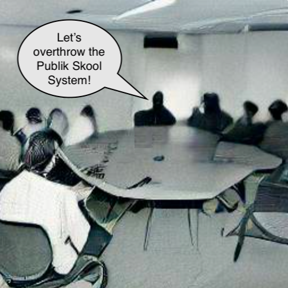

XV.

Khali came over with Marissa’s BCEC friend, Tamaya, and we went down to Mars’ family’s finished basement, which was the size of my entire house.
“Who’s this?” Tamaya asked, nodding toward me.
“That’s Xiander Xu,” Khali said. “He’s in love with Marissa even ‘though she’s a lesbian.”
Mars rolled her eyes. “I hereby call to order the inaugural meeting of students for a free cap’listik democr’cy. Please take these role cards to help identify yourself for roll call,” and she passed out these pre-printed index cards. Then she elbowed me.
“Um, hi, I’m Xiander Xu, Informational Technology Specialist.” I set the card down. “I thought this was a meeting for anti-democr’cy?”
“As I told you before,” Khali said, “one can’t have a counter-revolution without a proper revolutionary force first. And if we leave it up to your buddies at Border Line, it’ll never happen.” Then she pulled her card up to her face. “Khali Pahlavi, director of strategic maneuvers.”
There was an awkward pause. “I’m Tamaya Tompkins, creative solutions advocate for overcoming antagonism. Two years ago, I went to skool underneath Mr. Cox, BeaverCreek’s new prince-o’-pull.”
“And I’m Mars Ares Bellicose, KublaKhan of War. Tamaya: – tell us about Mr. Cox.”
“Well, Mr. Cox is a rule-maker. He came into our skool and immediately made all these rules. What direction can one walk in a particular hallway? Can one chew gum? Can one drink non-water liquids in non-transparent containers? Does one have the right to not know the skool song? To show their barren shoulders?”
“So he’s a control freak,” I said.
Tamaya exhaled and shrugged. “My mama knew him growing up in TrotWood [Dayton suburb, west of I-75]. She said he was a good man and what I needed to realize was that adults have to mind children differently in a more predominantly black area. One can’t do this TMB, loosey-goosey, do whatever you feel parenting; to do so would be a disservice to the children. You must instill respect, discipline, and hard-work values into them, especially if too many of them – for whatever valid socioeconomic reasons – are not experiencing such ethics at home. It’s a matter of life or death.” Then she paused. “So says my mama.”
“Yeah, my parents were raised on that shit too. Albeit in Azia. That’s why they never sent me to normieSkool.”
Khali clapped her hands in mock applause toward me. “And my parents believe in a stark dividing line between the betters™ and the haveNots™. Anyhow, what I take from your explanation, Tamaya, is that Prince’o’pull Cox’s style of authoritarianism is adaptive but may be maladaptive in this new environment with a different student population. So if he tries this micromanaging nonsense, he’ll hear some nasty feedback. And our goal is to transform that feedback into a force that propels a student democr’cy movement.”
I stopped listening and began focusing on using my iContacts™ to order around an AI app to program a platform to host multimedia for discussion on voting items to change an AlmightySkoolRuleBook. Then I found a somewhat modern set of bylaws in an old BCEC student handbook, and began scanning the text for plausibly problematic provisions (such as a paragraph dictating the non-ability for students to wear certain colour combinations that are s’posedly associated with certain street gangs). I wrote up a proposed rule modification, had the AI create some fake student profiles, and had the AI begin creating debate content arguing for and against the proposed modification.
In the background, I heard Tamaya say: “What’s wrong with his eyes?”
“He has iContacts™. The computer kind,” Khali said. “We’re veritable cyborgs at TMB,” and Khali showed Tamaya the nano-sensitive probes sewn into the hair against the back of her skull. She sent a T-T that she was showing mine to Tamaya, so I leaned forward and let her touch my head while my eyes kept going crazy, setting up this wikiDemocr’cy.
“That’s… creepy,” Tamaya said.
“We can basically read one another’s minds,” Khali said, unpocketing and unfolding a large screen LCD MOB before she creekstreamed her channeling of my POV (assembling the wiki’mocr’cy). “Plus, we can send lil’ telepathic thought-texts to one another,” and then Khali transmitted a pieChart indicating the proportion of the time I’ve spent looking at the three girls since we entered the basement. Tamaya’s reflection entered my pupils the most. “As you can see, Xiander can’t keep his eyes off you, Tamaya.”
“KHALI!” Mars said. “Will you leave the boy alone?”
Khali smiled. “No.”
“It’s okay,” I said. “She’s just trying to immunize me to publik ridicule. Why? Who knows? But that’s all it is.”
“No,” she retorted. “I do it because I think Xiander’s a creeper. But since he’s so harmless, it’s merely funny rather than scary.”